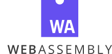
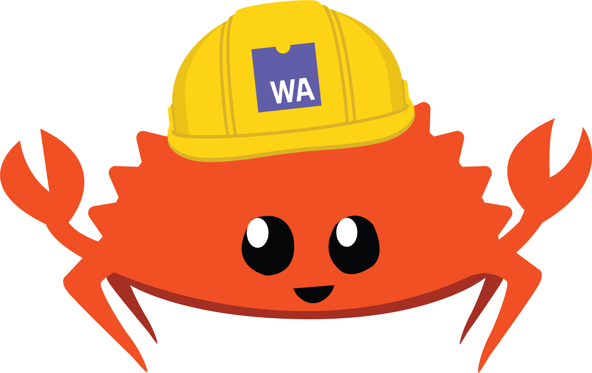

WebAssembly
Why Rust?

Predictable performance
No unpredictable garbage collection pauses. No JIT compiler performance cliffs. Just low-level control coupled with high-level ergonomics.

Small code size
Small code size means faster page loads. Rust-generated .wasm doesn’t include extra bloat, like a garbage collector. Advanced optimizations and tree shaking remove dead code.

Modern amenities
A lively ecosystem of libraries to help you hit the ground running. Expressive, zero-cost abstractions. And a welcoming community to help you learn.
Get started!

Learn more about the fast, safe, and open virtual machine called WebAssembly, and read its standard.
Learn More
Learn how to build, debug, profile, and deploy WebAssembly applications using Rust!
Read The BookLearn more about WebAssembly on the Mozilla Developer Network.
Check it outPlays well with JavaScript
Augment, don’t replace
The dream of WebAssembly is not to kill JavaScript but to work alongside of it, to help super charge processing-heavy or low-level tasks — tasks that benefit from Rust’s focus on performance.
Works with familiar toolchains
Publish Rust WebAssembly packages to package registries like npm. Bundle and ship them with webpack, Parcel, and others. Maintain them with tools like npm audit and Greenkeeper.
Seamless interop
Automatically generate binding code between Rust, WebAssembly, and JavaScript APIs. Take advantage of libraries like web-sys that provide pre-packaged bindings for the entire web platform.
Production use
We can compile Rust to WASM, and call it from Serverless functions woven into the very fabric of the Internet. That’s huge and I can’t wait to do more of it.
– Steven Pack, Serverless Rust with Cloudflare Workers
The JavaScript implementation [of the source-map library] has accumulated convoluted code in the name of performance, and we replaced it with idiomatic Rust. Rust does not force us to choose between clearly expressing intent and runtime performance.
– Nick Fitzgerald, Oxidizing Source Maps with Rust and WebAssembly
[Rust’s] properties make it easy to embed the DivANS codec in a webpage with WASM, as shown above.
– Daniel Reiter Horn and Jongmin Baek, Building Better Compression Together with DivANS